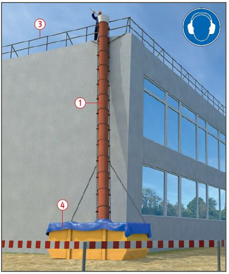
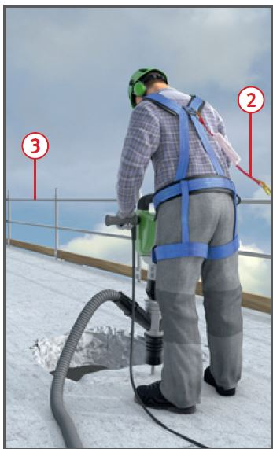
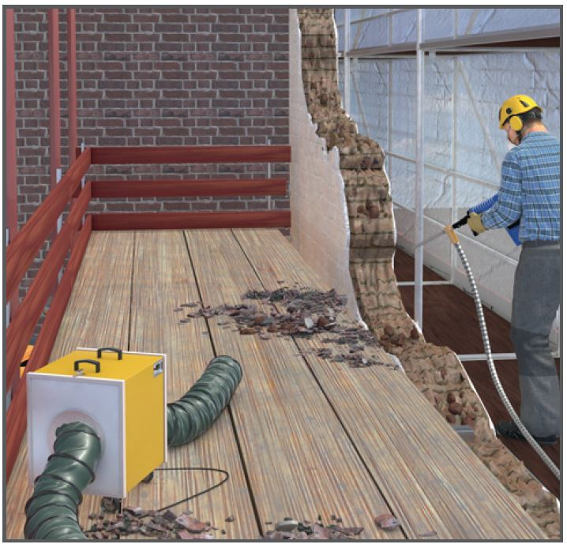

Gefährdungen
- Durch Absturz von Personen,
umstürzende Bauteile und herumfliegende und abprallende Trümmer kann es zu Verletzungen kommen.
- Die Lärmbelastung kann zu Gehörschäden führen.

Schutzmaßnahmen
- Treppenhäuser möglichst lange erhalten und von Bauschutt freihalten.
- Aufstiege nicht in die Nähe von Abwurfplätzen legen.
- Decken und Wände nicht durch Anhäufung von Bauschutt überlasten! Im Zweifelsfall abstützen und verstreben.
- Geschlossene Rutschen bis zur Übergabestelle verwenden. Sie dürfen nur an tragfähigen Bauteilen befestigt werden
 .
.
- Gehörschutz benutzen, wenn lärmerzeugende Abbruchverfahren (z. B. mit Abbruch- oder Bohrhämmern) angewandt werden.
- Bei Gewölben besondere Maßnahmen treffen, um die Schubkräfte sicher abzuleiten.
- Bei Krag-Konstruktionen die Kippgefahr durch Wegfall der Auflast oder der Einspannung berücksichtigen.
- Stürze und Träger nicht fallen lassen, sondern sichern und abheben.
- Lasten vor dem Trennen
oberhalb des Schwerpunktes
anschlagen, um gefährliche
Horizontalkräfte zu vermeiden.
Schwerpunktlage vorher ermitteln.
- Bauteile dürfen zum Anschlagen nur begangen werden, wenn sie sicher begehbar und mindestens 20 cm breit sind.
- Verbindungen und Anschlüsse von Bauteilen erst lösen, wenn diese gegen Herabfallen gesichert sind, z. B. durch Anschlagen am Hebezeug.
- Trennschnitte nur von sicheren
Standplätzen ausführen. Abbruchanweisung beachten.
- Lärm- und vibrationsgeminderte Maschinen und Geräte verwenden.
- Beim Brennschneiden darauf achten, dass Personen durch herabfallende Schlacke nicht gefährdet werden und keine Brandgefahr besteht. Feuerlöscheinrichtungen bereithalten.
- Einzelne Abbruchschritte sorgfältig planen und festlegen.

- Geeignete Gerüste, Maschinen und Hilfsmittel zur Verfügung stellen.
- Staubarme Abbruchverfahren anwenden, wenn dies nicht möglich ist, Staubentwicklung mit Wasser einschränken bzw. Atemschutzgeräte benutzen, z. B. Filtermasken mindestens mit P2-Filter.
- Absturzsicherungen einrichten,
wenn dies nicht möglich ist, Auffangeinrichtungen (Fanggerüste/ Dachfanggerüste/Auffangnetze) vorsehen.
- PSA gegen Absturz (PSAgA) darf nur verwendet werden, wenn Absturzsicherungen oder Auffangeinrichtungen nicht angebracht werden können.
- PSAgA
 nur an Anschlagpunkten
befestigen, die ausreichend tragfähig sind. Anschlagmöglichkeiten
an Teilen baulicher Anlagen können zur Befestigung benutzt werden, wenn deren Tragfähigkeit für eine Person nach den technischen Baubestimmungen mit einer Fangstoßkraft von 6 kN einschließlich den für die Rettung anzusetzenden Lasten nachgewiesen ist.
nur an Anschlagpunkten
befestigen, die ausreichend tragfähig sind. Anschlagmöglichkeiten
an Teilen baulicher Anlagen können zur Befestigung benutzt werden, wenn deren Tragfähigkeit für eine Person nach den technischen Baubestimmungen mit einer Fangstoßkraft von 6 kN einschließlich den für die Rettung anzusetzenden Lasten nachgewiesen ist.
- Anschlagpunkte müssen durch den Vorgesetzten festgelegt werden.
- Zur Staubreduzierung Container
mit einer geschlossenen Plane abdecken
 .
.
- Nicht ungesichert auf Mauerkronen arbeiten.
Zusätzliche Hinweise für Arbeitsplätze und Verkehrswege
- Verkehrswege müssen sicher begehbar sein.
- Regelmäßig Treppen und Verkehrswege von Bauschutt und Abbruchmaterial beräumen.
- Für eine ausreichende Beleuchtung sorgen.
- Einzelne Träger und Balken,
Türblätter oder flach gelegte Leitern nicht als Arbeitsplätze oder Verkehrswege benutzen.
- Abbrucharbeiten (Stemmarbeiten) nicht von Leitern und Hubarbeitsbühnen ausführen. Ausnahme: z. B. Abbrennen von Bewehrungseisen und Sicherungsarbeiten.
- Bei nicht durchtrittsicheren
Bauteilen sind Lauf- und Arbeitsstege zu verwenden.
- Deckenöffnungen, Deckenkanten und nicht benutzte Abwurfschächte mit Absturzsicherungen versehen, z. B. Seitenschutz
 .
.
- Öffnungen durchtrittsicher und unverschiebbar abdecken.

Zusätzliche Hinweise für Gerüste beim Abtragen von Hand
- Gerüste für Abbrucharbeiten müssen mindestens der Lastklasse 3 entsprechen.
- Verankerungen unempfindlich gegen Steinschlag ausbilden, z. B. durch zangenartige Verklammerungen hinter Gebäudeteilen.
- Gerüste nicht durch Bauschutt
überlasten. Gerüstlagen regelmäßig reinigen. Auskragende Schutzdächer möglichst vermeiden.
- Bei Planen- oder Netzverkleidungen Anordnung und Anzahl der Verankerungen statisch nachweisen.
- Fassadengerüste dem Abbruchfortschritt entsprechend abbauen.
Arbeitsmedizinische Vorsorge
- Arbeitsmedizinische Vorsorge
nach Ergebnis der Gefährdungsbeurteilung
veranlassen (Pflichtvorsorge)
oder anbieten (Angebotsvorsorge).
Hierzu Beratung
durch den Betriebsarzt.
07/2021